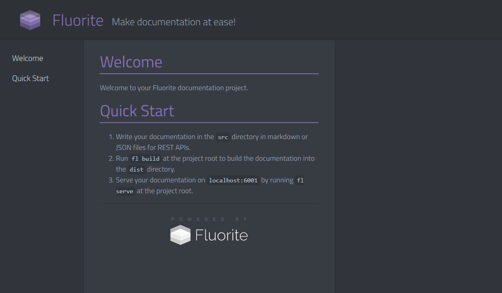
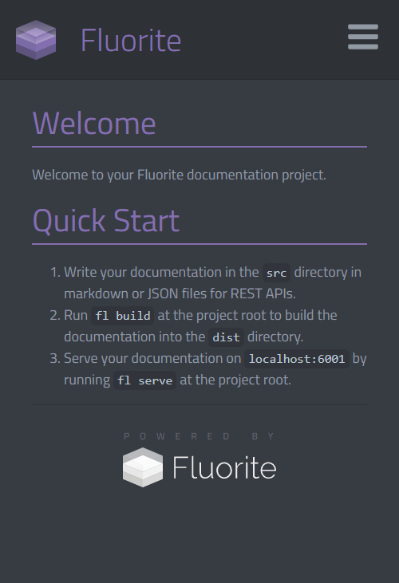
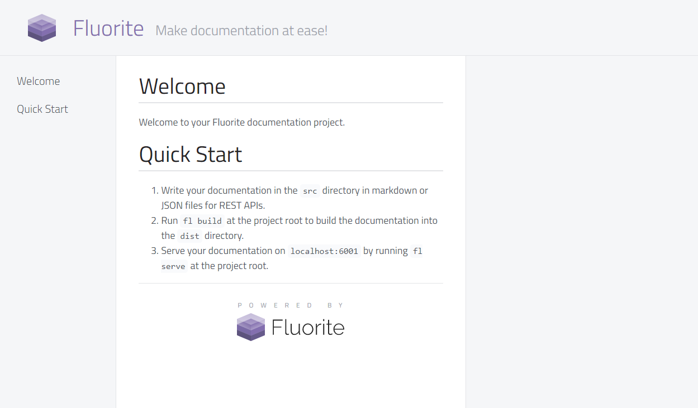
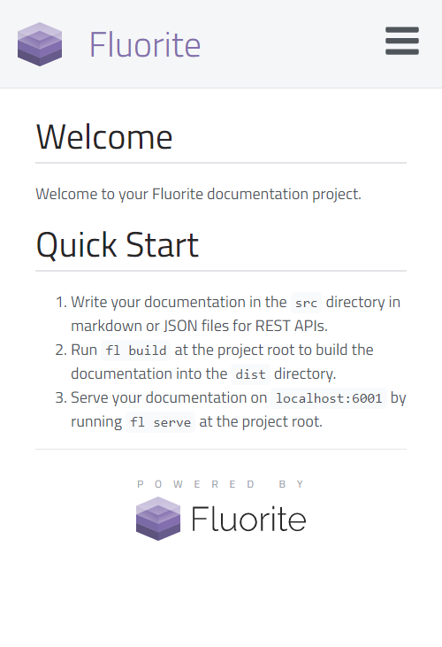
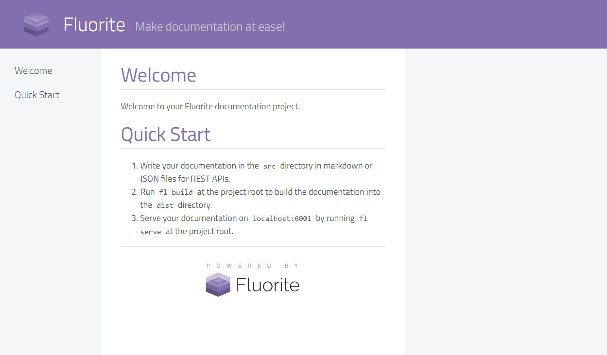
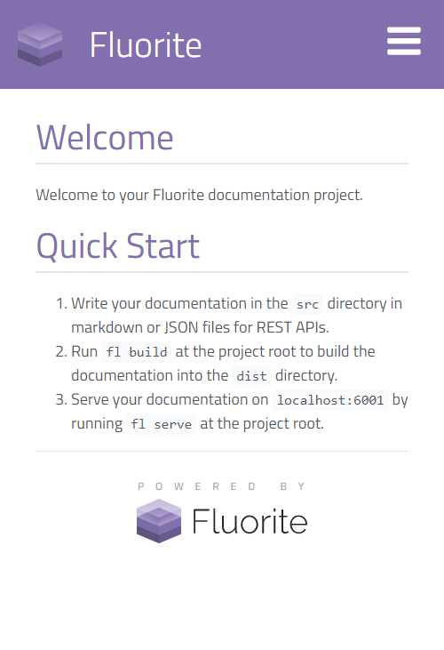

Onyx
Onyx theme comes in three flavors, introduces three extra features and is responsive.
Flavors
dark (default)


light


purple


You can define your own flavor for this theme by adding a flavor profile inside
/themes/onyx/flavors. Read theme flavors and take a look at/themes/onyx/flavors/_dark.scssto find out how the Onyx theme uses those flavor variables.
Theme Options
The following properties can be used in the themeOptions of flconfig.json (all of which are optional):
- subtitle: Shows up in front of the title.
- logo: A path to an image used as the logo.
- favicon-ico: The path to a favicon in
.icoformat. - favicon-16x16: The path to a PNG favicon with dimensions 16x16.
- favicon-32x32: The path to a PNG favicon with dimensions 32x32.
- favicon-70x70: The path to a PNG favicon with dimensions 70x70.
- favicon-144x144: The path to a PNG favicon with dimensions 144x144.
- favicon-150x150: The path to a PNG favicon with dimensions 150x150.
- favicon-310x150: The path to a PNG favicon with dimensions 310x150.
- favicon-310x310: The path to a PNG favicon with dimensions 310x310.
- favicon-180x180: The path to a PNG favicon with dimensions 180x180.
- favicon-192x192: The path to a PNG favicon with dimensions 192x192.
- favicon-512x512: The path to a PNG favicon with dimensions 512x512.
- manifest: The path to a web manifest with format
.webmanifest. - mask-icon: The path to a SVG mask icon.
- masapplication-config: The path to the XML config for msapplication.
- theme-color: The Hex color code of the website.
- msapplication-TileColor: The hex color code for msapplication tile color.
- showLoadingAnimation: A boolean indicating whether the loading spinner should be displayed when website is loading.
- stickyHeader: A boolean toggling the sticky header.
- hidePoweredBy: A boolean indicating if the "Powered By Fluorite" should be shown at the bottom of each page.
You can generate your favicon using https://realfavicongenerator.net/ which will generate all the files needed for the theme options.
Theme Specific Features
The Onyx theme uses the Comment Parser Utility to provide comment-based features for markdown files.
Responsive Markdown
You can make parts of your markdown content responsive by using the following HTML comment: <!-- responsive: mobile, tablet, desktop --> to start a responsive block and <!-- /responsive --> to end the block. Any content inside the block will become responsive based on the arguments provided (mobile, tablet, or desktop).
Example:
This is a markdown document.
<!-- responsive: mobile, tablet -->
This paragraph only shows up in mobile and tablet devices.
<!-- /responsive -->
<!-- responsive: desktop -->
This paragraph only shows up in desktops.
<!-- /responsive -->Right Pane
You can place parts of your markdown content inside the right pane. Use the <!-- aside --> and <!-- /aside --> comments to define a block. All content inside those blocks will be pushed to the right pane and lined up with the element prior to the aside comment. If right pane is not available due to the display width (tablet and mobile views) then the content won't be touched.
Notes
You can mark single lines of text as notes using the following syntax: <!-- note: type --> where type is either info, warning, error, or success.
Example:
<!-- note: info -->
Informational note
<!-- note: warning -->
Warning note
<!-- note: error -->
Error note
<!-- note: success -->
Success note